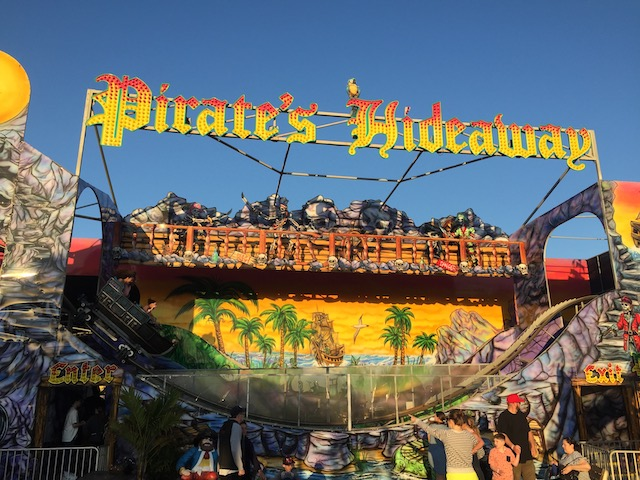
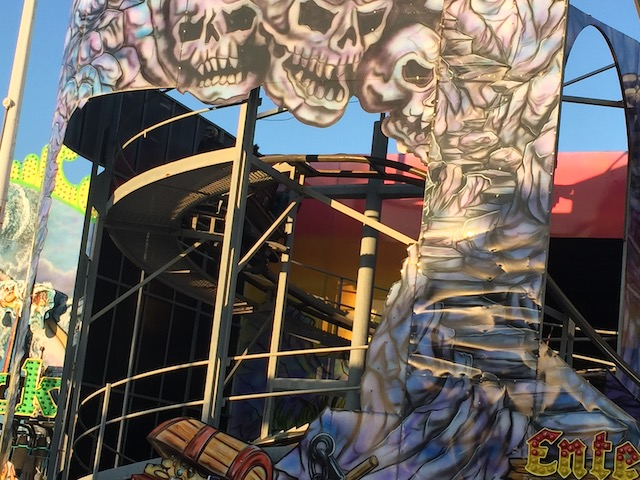

| |
Pirate's Hideaway Review

Today at Casino Pier, we'll be reviewing Pirate's Hideaway. Now as a ride itself, this ride is nothing special. However, one thing makes this ride incredibly unique and stand out. And that would be its sheer...."WHAT THE FLYING F*CK" nature of this ride. You see....if you go into this ride completely blind, not knowing anything about it, you would SWEAR that it's a dark ride. It f*cking LOOKS like a dark ride. And I know some people count certain dark rides as credits (Those people are sad, pathetic, and wrong. I may be sad and pathetic, but at least I'm not wrong lol). I mean, the cars themselves look EXACTLY like those you would find on a Fantasyland Dark Ride. And maybe at one point, it was meant to just be a dark ride. But.....nope. This ride is an honest to god, actual roller coaster that unquestionably counts as a credit. Though....yeah. It does give me some Lost Coaster vibes (the one coaster in America that's even stranger. Future Top 10 List as soon as I'm not busy lol). So yeah. Get in the weird dark ride cars, pull down the lap bar, and we're off! We head up a spiral lifthill that......have you ever ridden the dark ride Creep Show!? It feels like that. Except....it's a coaster lifthill. You can tell by hearing the anti-rollbacks and the clank clank clank. We then go through that and....FIRST DROP!!! It's not very big. But it is pretty steep for a ride of this nature. So....it just jolts you down and gives you some speed. We then head up a small little hill and....SLAM!!! You go around this Wild Mouse turn. Are you sure this wasn't meant to be a dark ride that they converted into a roller coaster? We jolt around that turn, and JOLT back into another small drop. This thing.....definately wasn't engineered right. Pretty sure there are some mistakes here. This ride is ROUGH. Not painful rough, but.....very jolty. I could easily see others complaining of whiplash. We then head past another round of theming to see the back of the ride, which.....I'm sad to say, but is completely bare. There's NOTHING back here. Again, fitting with that cheesy carnival theme. Giving me some nice Zombie vibes. If that piece of sh*t was a roller coaster lol. Speaking of which, did you ever play the Original RCT1? Not OpenRCT2 which kicks ass, but the honest to god original Roller Coaster Tycoon 1? Remember the Steel Mini Coaster? Basically the Jr. Coaster, except with the ability to make steep drops, as well as having those weird spinning cars that just looked so damn cool (What were those even based on? I was told those weird Chinese credits, but I don't think so). We then JOLT down, and go through another dip. There's no airtime here. But there is some aggressive movement and joltiness. Which.....that's enjoyable. Sort of. Go around a quirky S Curve before going around another tight turn. We then head through these tiny dips. These.....honestly just feel like speed bumps. You ever driven over speed bumps at speeds far greater than the road intends you to? THAT'S what this part of the ride feels like. Hell, that's kind of what ALL of it feels like! And BAM!!! AGRESSIVE BRAKING!!! GAH!!! That was BRUTAL!!! I know it's done to avoid PAINFUL laterals. But....STILL!!! We go through another round of turns that....are you sure this ride isn't supposed to be an unofficial Wild Mouse? I know that's not really the case since....Casino Pier did use to have a Wild Mouse (that still lives on at Scandia Sacramento and is also a pretty strange ride itself) and this ride at the same time. But this ride has mean tights just as aggressive as those on a Wild Mouse. There's a couple more dips. These aren't quite as jolty since...we're going much slower. However, there's a couple more turns, and.....BAM!!! They AREN'T SMOOTH!!! And....that's Pirate's Hideaway. Uh....What the f*ck was that? No really. It's built by Wisdom Rides, a company known for Miner Mikes, Dragon Wagons, Orient Expresses, basically, kiddy coasters. And....this is their attempt at an....adult coaster I guess. Very strange. It's not good by any means. But it's just so damn strange that you have to give it a ride. Just to say WTF!!?
4/10
Location: Casino Pier
Opened: 2007
Built by: Wisdom Rides
Last Ridden: June 17, 2021
Pirate's Hideaway Photos

Home
|